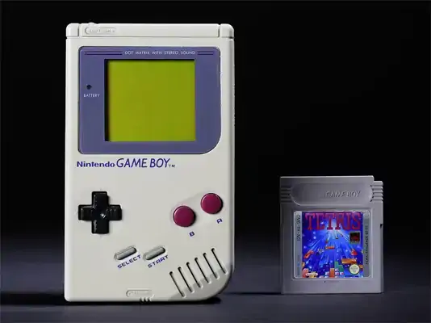
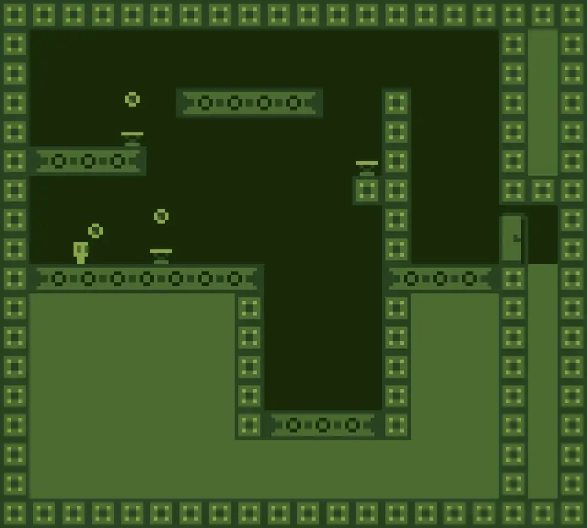

Green pixels are addictive_
06/10/2024
When you speak about C to someone, he (or she) will generally think about low level programming.
That's right, but no one will actually think (They'll think about OpenGL, SDL2 or high performance apps.) you're making things on a low-end hardware too, the Nintendo Game Boy from 1989.

Well, when you have only 8-16kb of RAM, a ~5MHz CPU, making games and apps push you to the limits (not only hardwares but programming ones too).
Instead of writing pixel by pixel on the screen, the hardware lets you only put sprites and tiles in memory, and then putting them on screen.
Which make sense when you know that you couldn't anyway store in the RAM even a single frame-buffer (160*144 = 23,040kB...).
Some months ago, I'd made a JS game, Pyxio, which I was not satisfied at all.... it was not really well written and was not well optimized.
I've tried to port the same logic/idea on the little GB with GBDK (a modern Game-Boy SDK), and honestly, I was a bit shocked by the fact that with 9Mhz, that device was a JS canvas killer. (same game would take 4-5% of my 3.4GHz CPU which means 136MHz vs 9MHz for the same result (I know there's differences... ))
Here's a screenshot of the current project (game engine is done, and it now needs more objects and a small scenario).
